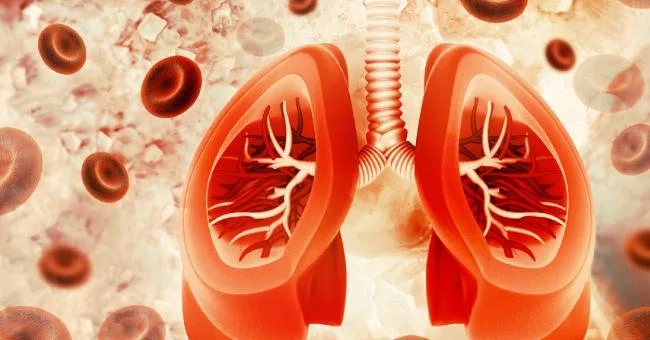

Expanded Nursing Uganda Explanation
Pulmonary hemorrhage should be understood beyond a short definition. Link the concept to patient history, focused assessment, common risks, nursing priorities, documentation and evaluation of outcomes.
01 PULMONARY HEMORRHAGE
Pulmonary hemorrhage (PH) is a serious condition in children, characterized by bleeding into the alveoli and airways of the lungs .
Pulmonary haemorrhage is an acute bleeding from the lung, from the upper respiratory tract, the trachea, and the alveoli .
Pulmonary hemorrhage (PH) in infants is a serious condition characterized by bleeding into the lungs, often presenting as fresh, bloody fluid from the endotracheal tube (ETT) or lower respiratory tract .
Defining Pulmonary Hemorrhage:
- Massive Pulmonary Hemorrhage: Involves at least two lobes of the lungs .
- Histological Definition: Presence of red blood cells (RBCs) within the alveolar spaces or interstitium of the lung tissue .
The onset of pulmonary hemorrhage is characterized by productive cough with blood (hemoptysis) and worsening of oxygenation leading to cyanosis.
02 Causes of Pulmonary Heamorrhage
Infectious :
- Viral : Respiratory syncytial virus (RSV), influenza, parainfluenza
- Bacterial : Mycoplasma pneumoniae, Chlamydia pneumoniae
- Other : Adenovirus, rhinovirus
Non-infectious :
- Idiopathic : Occurs without a known cause, often associated with Goodpasture’s syndrome, an autoimmune disease
- Trauma : Chest trauma, blunt force injury
- Vascular abnormalities : Pulmonary arteriovenous malformations, pulmonary hypertension
- Coagulation disorders : Hemophilia, von Willebrand disease
- Drug – induced : Aspirin, nonsteroidal anti-inflammatory drugs (NSAIDs)
03 Risk Factors of Pulmonary Heamorrhage
Maternal Risk Factors:
- Pregnancy-related complications :
- Preeclampsia/Eclampsia (Pregnancy-induced hypertension)
- Toxemia
- Infection
- Bleeding Disorders : Hemophilia, von Willebrand disease, etc.
- Medications : Anticonvulsants
- Antitubercular drugs
- Vitamin K antagonists
- Lack of antenatal steroids : In preterm labor, this can weaken the infant’s lungs.
Infant Risk Factors:
- Prematurity : Most common risk factor.
- Low Birth Weight : Infants weighing less than 1000 grams are at increased risk.
- Intrauterine Growth Restriction (IUGR) : Limited growth in the womb.
- Respiratory Problems :
- Hypoxia (low oxygen levels)
- Asphyxia (lack of oxygen)
- Respiratory Distress Syndrome (RDS)
- Meconium Aspiration
- Pneumothorax (collapsed lung)
- Surfactant Treatment
- Sepsis : Bloodstream infection.
- Mechanical Ventilation : Can irritate the lungs.
- Patent Ductus Arteriosus (PDA), Heart Failure: Cardiovascular complications.
- Disseminated Intravascular Coagulation (DIC), Coagulopathy : Bleeding disorders.
- Multiple Births, Male Sex : Increased risk factors.
- Hypothermia : Low body temperature.
- Polycythemia : High red blood cell count.
- Erythroblastosis Fetalis : Blood incompatibility between mother and fetus.
- Extracorporeal Membrane Support : Used for severe respiratory distress.
- Previous Use of Blood Products: Can increase the risk of bleeding.
- Hypoplastic Lung Disease : Underdeveloped lungs.
04 Clinical Presentations of Pulmonary Heamorrhage
- Bleeding from Airways: Oozing of blood from the nose, mouth, or ETT.
- Secretions : Frothy pink tinged secretions followed by fresh bloody secretions.
- Rapid Clinical Deterioration :
- Increased work of breathing
- Bradycardia (slow heart rate)
- Apnea (cessation of breathing)
- Cyanosis (blue discoloration of the skin)
- Hypotension (low blood pressure)
- Pallor (paleness)
- Poor systemic perfusion (inadequate blood flow)
- Signs of Infection or Congestive Heart Failure : Fever, cough, wheezing, edema, hepatosplenomegaly, murmur.
- Lung Auscultation : Decreased breath sounds and crepitations (crackling sounds).
- Respiratory distress: Difficulty breathing, rapid breathing, wheezing, coughing.
- Hemoptysis : Coughing up blood, which can range from streaks of blood to frank blood.
- Hypoxia : Low blood oxygen levels, leading to cyanosis (blue discoloration of the skin)
- Fever : May be present if the PH is caused by an infection.
- Chest pain : May be present if the PH is caused by trauma or a vascular abnormality.
- Respiratory failure : Severe cases can lead to respiratory failure, requiring mechanical ventilation.
- Anaemia : Continuous bleeding with decreased hematocrit (HCT) level resulting in anemia
05 Diagnosis of Pulmonary Hemorrhage
The common method of identifying the disease symptoms as well as the progression includes the following:
History and physical examination : Taking a detailed medical history and performing a physical examination to assess the severity of the condition.
Common Laboratory Investigations : These include:
- Blood tests : Check for infection, coagulation disorders, Platelets count and other underlying conditions.
- Complete Blood Count or CBC
- Coagulation studies (Prothrombin time n-11-13.5 sec), thrombin time n- 14-19 sec, activated partial thromboplastin n- 30-40 sec)
Pulmonary function tests including elevated DLCO (diffusion capacity of the lungs for Carbon Monoxide), usually restrictive, is greater than an obstructive pattern with the low exhalation of Nitric Oxide.
Radiographic Imaging : The radiographic diagnosis includes –
- Chest X-ray for detecting patchy alveolar opacification, Shows infiltrates and atelectasis (collapsed lung) consistent with pulmonary hemorrhage.
- CT chest for detecting spreading of the disease in normal areas
- Bronchoscopy : A procedure where a thin, flexible tube is inserted into the airways to visualize the lungs directly and obtain samples for testing.
Serologic tests are performed to find out the exact underlying disorders.
Echocardiography may also require if there is mitral stenosis.
Lung or renal biopsy is often done when a cause is undetectable or if the progression of the disease is very fast. Specimens usually show blood along with numerous siderophages and erythrocytes; lavage fluid characteristically remains hemorrhagic or becomes highly hemorrhagic just after consecutive sampling.
06 Management of Pulmonary Heamorrhage
Aims
- To decrease and stop the bleeding in the lungs.
- To identify the underlying cause.
- To improve gaseous exchange.
- To improve distress
Treatment for Pulmonary Hemorrhage depends on the underlying cause and severity. It may include:
- Supportive care : Oxygen therapy, mechanical ventilation, and fluid management.
- Antibiotics : For bacterial infections.
- Antivirals : For viral infections.
- Corticosteroids : To reduce inflammation.
- Plasmapheresis : A procedure to remove antibodies from the blood, used in cases of autoimmune disorders like Goodpasture’s syndrome.
- Surgery : May be necessary to repair vascular abnormalities or remove blood clots.
Initial Stabilization and Support:
Airway Management : Secure a patent airway and ensure adequate ventilation.
- Intubation may be required to facilitate mechanical ventilation.
- Suctioning should be performed gently to minimize airway trauma.
Oxygenation : Provide supplemental oxygen as needed to maintain adequate oxygen saturation levels.
Hemodynamic Support :
- Volume Expansion : Correct hypovolemia with intravenous fluids. Colloids may be used to improve vascular volume. Colloids are intravenous solutions that contain large molecules that remain in the vascular space, increasing blood volume and improving hemodynamic stability, and include Albumin.
- Inotropes : Administer medications (e.g., dopamine, dobutamine) to improve cardiac output and blood pressure if needed.
- Inotropes are medications that increase the force of myocardial contraction, leading to improved cardiac output and blood pressure
- Packed Red Blood Cells (PRBCs): Transfuse PRBCs to correct anemia and maintain adequate hematocrit.
Acidosis Correction :
- Address underlying causes of acidosis, including hypovolemia, hypoxia, and low cardiac output.
- If necessary, administer sodium bicarbonate intravenously.
Emergency Measures
- Through or by suctioning the airway initially until the bleeding subsides.
- By increasing oxygen support.
- Mechanical ventilation should be given in massive pulmonary hemorrhage.
Continuous Management
- Packed Red Blood Cells to correct blood volume and hematocrit levels. Through administering blood, this will correct hypovolemia, hypoxia and also correct low cardiac output.
- Rescue Surfactant: Consider administering a single dose of surfactant after the infant is stabilized on mechanical ventilation. This is plausible because blood inhibits surfactant function, but more research is needed to confirm its benefit. Rescue surfactant by using a single dose of surfactant after the infant has been stabilized on the ventilator.
- Endotracheal Epinephrine : Administering epinephrine via the endotracheal tube or nebulized epinephrine may be considered in some cases, but effectiveness is not well-established.
Pharmacology Management
- Hemocoagulase : Is a new treatment method discovered from a brazilian snake’s venom. It has a thromboplastin-like effect that coverts prothrombin to thrombin and fibrinogen to fibrin. Its measured in KU(Klobusitzky Units) and dose os 0.5KU every 4-6 hours until hemorrhage is stopped.
- Activated Recombinant Factor VIIa (rFVIIa) : This drug works by activating the extrinsic pathway and binds to tissue factor which will eventually bind and seal sites with vascular injury. For effectiveness o this drug, platelets can be administered too. The dosage is 50mg/kg twice daily for 2 – 3 days.
- Low-molecular-weight Heparin : This drug is found to provide better patient outcome for neonatal pulmonary hemorrhage as it does improve the pulmonary function and coagulation function and reduce the incidence of getting complications.
- Diuretics and steroids can also be helpful.
07 Complications of Pulmonary Heamorrhage
Respiratory Complications:
- Respiratory Distress : The accumulation of blood in the alveoli can lead to severe respiratory distress, characterized by tachypnea, retractions, and cyanosis.
- Hypoxemia : Blood in the alveoli can impair gas exchange, resulting in low blood oxygen levels (hypoxemia).
- Pneumothorax : The pressure from blood in the lungs can cause a pneumothorax (collapsed lung).
- Atelectasis : Blood in the alveoli can collapse the lung tissue, leading to atelectasis.
- Bronchospasm : Some infants may develop bronchospasm in response to the irritation caused by blood in the airways.
- Acute Respiratory Distress Syndrome (ARDS) : Severe pulmonary hemorrhage can lead to ARDS, a life-threatening condition characterized by diffuse lung inflammation and impaired gas exchange.
Circulatory Complications:
- Hypovolemia : The loss of blood into the lungs can lead to hypovolemia (low blood volume), which can result in hypotension, shock, and organ dysfunction.
- Cardiac Dysfunction : Severe hypovolemia can impair cardiac function, leading to decreased cardiac output and heart failure.
- Cerebral Edema : Hypotension and hypoxemia can lead to cerebral edema (swelling of the brain), which can cause neurological complications.
Other Complications:
- Anemia : Significant blood loss can lead to anemia, which can further compromise oxygen delivery to the tissues.
- Infection : Blood in the lungs can provide a breeding ground for bacteria, increasing the risk of infection.
- Neurological Damage : Severe hypoxemia or cerebral edema can cause long-term neurological damage.
Long-Term Complications:
- Chronic Lung Disease : Repeated episodes of pulmonary hemorrhage or severe ARDS can lead to chronic lung disease.
- Developmental Delays : Severe hypoxemia or neurological damage can lead to developmental delays.
****
08 Nursing care plan for a patient with Pulmonary Hemorrhage
- Assessment Nursing Diagnosis Goals/Expected Outcomes Interventions Rationale Evaluation
- 1. Child presents with hemoptysis (coughing up blood), tachypnea, and respiratory distress (nasal flaring, use of accessory muscles). Ineffective Airway Clearance related to bleeding in the lungs as evidenced by hemoptysis and respiratory distress. The child will maintain a clear airway with reduced respiratory distress and no further episodes of hemoptysis. – Continuously monitor respiratory status, including respiratory rate, effort, and oxygen saturation. – Position the child in a semi-Fowler’s or upright position to facilitate breathing and reduce aspiration risk. – Administer humidified oxygen to maintain adequate oxygenation. – Prepare for possible intubation or mechanical ventilation if respiratory status worsens. Continuous monitoring helps detect changes in respiratory status and guide interventions. Positioning promotes optimal lung expansion and airway clearance. Humidified oxygen eases breathing and reduces the work of breathing. Mechanical ventilation may be necessary in severe cases to maintain adequate oxygenation. The child’s respiratory rate and effort normalize, oxygen saturation remains above 92%, and hemoptysis is reduced or absent.
- 2. Child exhibits pale skin, cold extremities, and decreased capillary refill time. Ineffective Tissue Perfusion related to blood loss from pulmonary hemorrhage as evidenced by pallor, cold extremities, and delayed capillary refill. The child will maintain adequate tissue perfusion as evidenced by normal capillary refill time, warm extremities, and stable vital signs. – Monitor vital signs, including heart rate, blood pressure, and capillary refill time, every 15-30 minutes initially. – Administer intravenous fluids or blood products as prescribed to maintain circulatory volume and improve perfusion. – Monitor hemoglobin and hematocrit levels regularly. – Assess for signs of hypovolemic shock and initiate emergency interventions if needed. Frequent monitoring of vital signs is crucial to assess the child’s circulatory status. Fluid and blood product administration help restore circulating volume and improve tissue perfusion. Hemoglobin and hematocrit monitoring guide transfusion and fluid therapy decisions. Early detection of shock allows for prompt life-saving interventions. The child’s capillary refill time improves to less than 2 seconds, skin color and temperature normalize, and vital signs stabilize.
- 3. Child is at risk for further bleeding due to underlying conditions (e.g., coagulopathy, infection). Risk for decreased tissue perfusion related to pulmonary hemorrhage and underlying conditions. The child will experience no further episodes of bleeding as evidenced by stable hemoglobin levels and the absence of hemoptysis. – Monitor coagulation profiles (PT, PTT, INR) and platelet count regularly. – Administer anticoagulants or clotting factors as prescribed to manage underlying coagulopathy. – Avoid invasive procedures and handle the child gently to minimize the risk of provoking further bleeding. – Educate parents on signs of bleeding and the importance of minimizing the child’s activity. Regular monitoring of coagulation profiles helps identify and address coagulopathies. Anticoagulants or clotting factors correct underlying coagulation abnormalities. Gentle handling and avoiding invasive procedures reduce the risk of inducing further bleeding. Parental education ensures early recognition of bleeding and adherence to activity restrictions.
- 4. Child exhibits anxiety and restlessness due to difficulty breathing and fear of bleeding. Anxiety related to respiratory distress and fear of bleeding as evidenced by restlessness and verbalization of fear. The child will demonstrate reduced anxiety as evidenced by calm behavior and verbalization of feeling more relaxed. – Provide a calm and reassuring presence to reduce the child’s anxiety. – Use age-appropriate communication to explain procedures and care to the child and family. – Encourage the presence of a parent or caregiver at the bedside to provide comfort and support. – Administer prescribed anxiolytics if the child’s anxiety remains severe despite non-pharmacological measures. A calm presence helps alleviate the child’s fear and anxiety. Age-appropriate explanations foster understanding and cooperation. Parental presence provides emotional support and reassurance. Anxiolytics may be necessary to reduce severe anxiety and facilitate care. The child appears more relaxed, with reduced restlessness and verbalizes feeling less anxious.
- 5. Child is at risk for infection due to potential aspiration and compromised lung function. Risk for Infection related to aspiration of blood and compromised lung function. The child will remain free from infection as evidenced by normal temperature and absence of signs of infection. – Monitor for signs of infection, including fever, increased WBC count, and changes in respiratory status. – Maintain strict aseptic technique during all procedures and interventions. – Administer prophylactic antibiotics as prescribed to prevent infection. – Educate parents on the importance of hand hygiene and infection prevention measures at home. Early detection and treatment of infection are critical to preventing complications. Aseptic technique minimizes the risk of introducing pathogens. Prophylactic antibiotics may reduce the risk of secondary infections. Parental education ensures adherence to infection prevention practices.
09 Nursing Uganda Clinical Lens
Use Pulmonary hemorrhage as a practical nursing topic, not only a memorized definition. Prioritize airway, breathing, circulation, pain, asepsis, wound healing and early complication detection.
- What to understand first: define pulmonary hemorrhage, identify the normal or expected pattern, then explain what changes when the patient is unwell.
- Why it matters in care: the nurse must recognize risk early, explain findings clearly, document accurately and know when to escalate.
- How to revise it: connect each point to assessment, nursing diagnosis or care problem, intervention, rationale and evaluation.
10 Assessment Guide
- Vital signs, pain, bleeding, perfusion, level of consciousness and injury pattern.
- Wound appearance, drainage, odour, swelling, temperature and surrounding skin.
- Fluid balance, mobility, nutrition, surgical site risk and ordered investigations.
11 Nursing Priorities, Rationales and Outcomes
- Stabilize urgent problems first, then prepare for investigations or theatre care.
- Maintain aseptic technique, pain control, wound care and documentation.
- Prevent shock, infection, pressure injury, deep vein thrombosis and delayed healing.
The rationale for these priorities is patient safety: nursing actions should prevent deterioration, reduce discomfort, support recovery and create clear evidence for the next caregiver.
- Expected outcome: The patient remains stable, wound healing progresses, pain is controlled and complications are recognized early.
12 Patient Teaching and Revision Check
- Explain pulmonary hemorrhage in simple language the patient or caregiver can repeat back.
- Teach warning signs, medicine or follow-up instructions, hygiene or lifestyle points where relevant.
- For exams, prepare a short answer using: definition, causes or risk factors, signs, assessment, management, complications and prevention.
- For ward practice, document baseline findings, actions taken, patient response and the plan for review.
Illustrations and Diagrams (7)



Related Video Lectures
Watch nursing lecture videos on YouTube for this topic. Opens in a new tab.
Watch on YouTubeExternal link: YouTube may use its own cookies and terms. Nursing Uganda is not affiliated with YouTube.